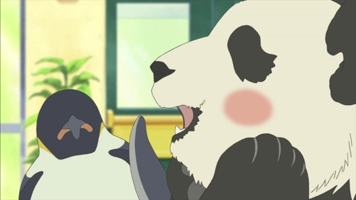
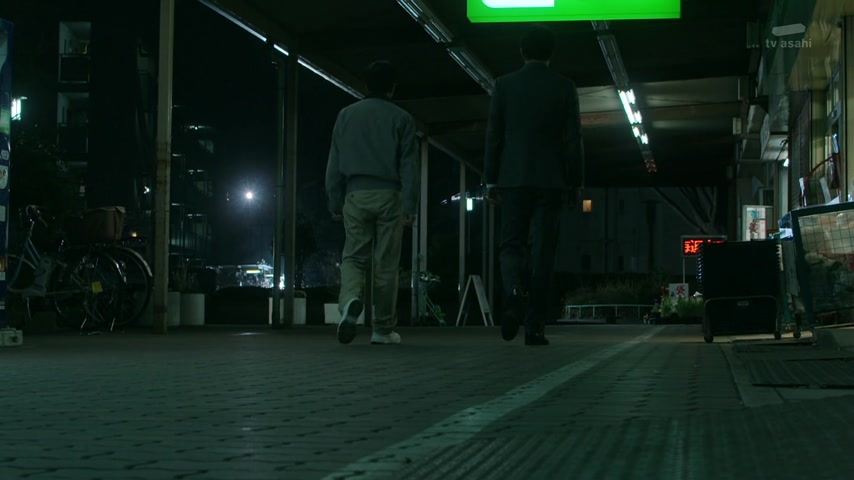
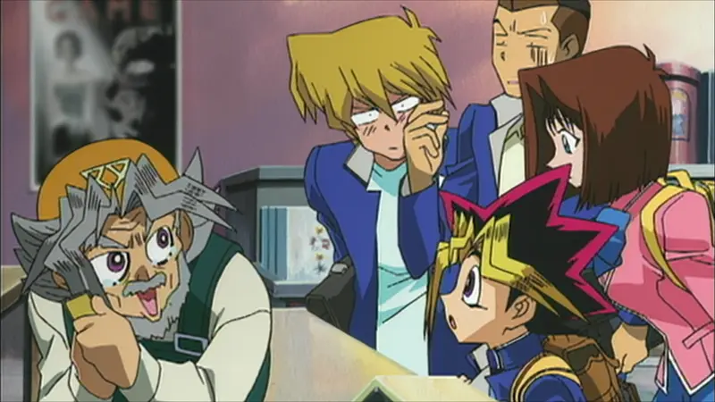
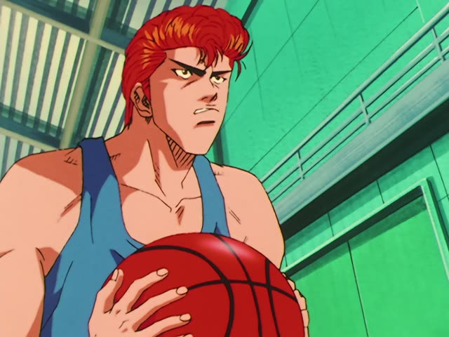
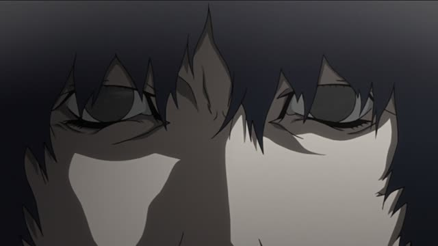
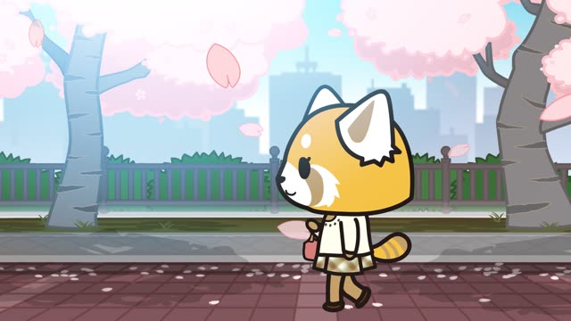
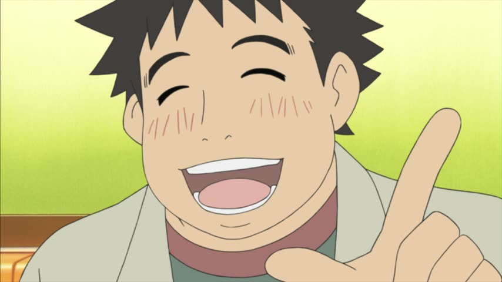

しか～ない
Kotaro Lives Alone · Episode 7
今しかチャンスがないんです。
"Now is the only chance."
しか means only, but the verb after it is always negative. It goes right after the thing you're limiting: 今 + しか.
On this card, 今 + しか + ない: "no chance except now". が stays after チャンス, and んです makes it polite.
しか always sounds like "that's all, and it's not much".

Shirokuma Cafe · Episode 2
パンダ君の好物しかおいてないじゃない.. そのカフェ。
"That café only has Panda's favorite foods, doesn't it..."
On this card, the café keeps nothing but Panda's favorite foods: しか + おいてない ("don't keep"). The じゃない at the end is "isn't it?", not part of しか.
Quick Examples
You check your wallet before paying.
500円しかありません。
"I only have 500 yen."
Not much money, and you're a bit worried. しか + ありません.
PoliteA coworker asks if you speak Chinese too.
日本語と英語しか話せません。
"I can only speak Japanese and English."
しか can cover a whole list: 日本語と英語 + しか.
PoliteYour friend opens your fridge, looking for food.
ビールしかないよ。
"There's nothing but beer."
ビールがない would be "there's no beer". With しか it flips: beer is the only thing there.
CasualYour friend asks how many people came to the party.
三人しか来なかった。
"Only three people came."
Past: しか + なかった. You hoped for more.
CasualWith and without
三時間寝た。
"I slept three hours." Just a fact.
三時間しか寝てない。
"I only slept three hours." Not enough, and you feel it. Same as だけ in meaning, but だけ is neutral (三時間だけ寝た) and しか sounds like a complaint.
Examples from Media

Border · Episode 3
50年ほどの歴史しかありません
"It only has about 50 years of history."
しか + ありません: "has nothing but 50 years". Polite negative.

Yu-Gi-Oh! · Season 0, Episode 1
世界に４枚しかないうちの１枚じゃ、値段のつけようもないわい。
"It's one of only four in the world, so there's no way to put a price on it."
４枚しかない = "there are only four". Here it describes the cards: "the only-four-in-the-world ones".
Good Morning Call · Episode 12
諦めるしかない。
"There's no choice but to give up."

Slam Dunk · Episode 36
これしかねえ。
"This is the only way."
ねえ: rough ない.
Dungeon Meshi · Episode 1
戦うしかないな。
"We have no choice but to fight."
Verb + しかない: no other choice.

Samurai Champloo · Episode 22
あるとしか言えない。
"All I can say is that it's there."
としか言えない: can only say.

Aggretsuko · Season 1, Episode 10
前に進むしかない。
"The only thing to do is move forward."

Shirokuma Cafe · Episode 10
竹しか食べてないから。
"Because I only eat bamboo."
しか needs a negative verb after it.
Further Reading
A Dictionary of Basic Japanese Grammar
Entry "shika" · pp. 398–402
Tae Kim's Guide to Japanese Grammar
Expressing Amounts · Using 「しか」